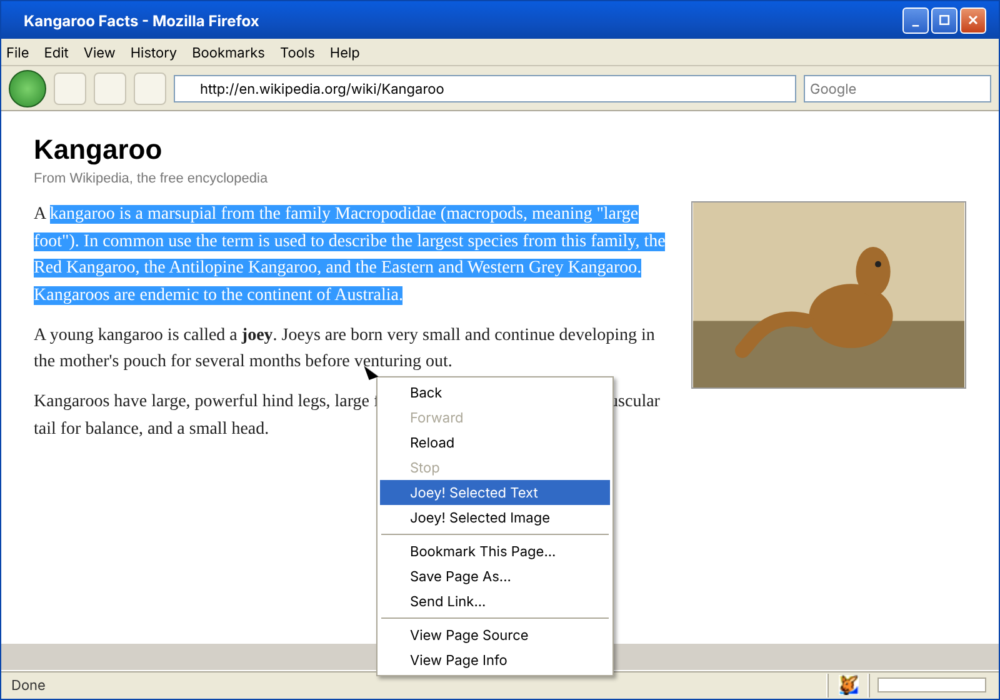
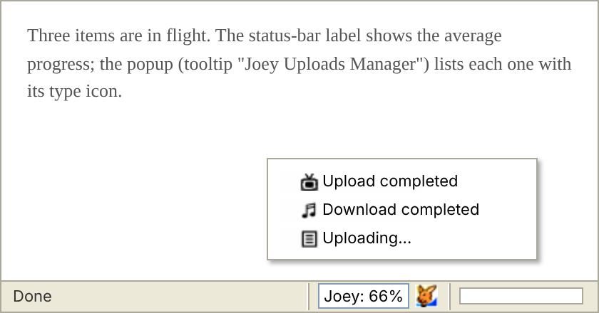
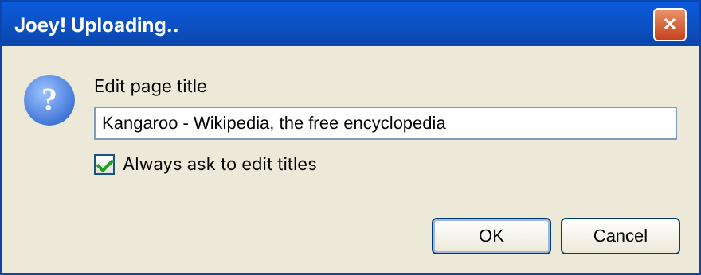
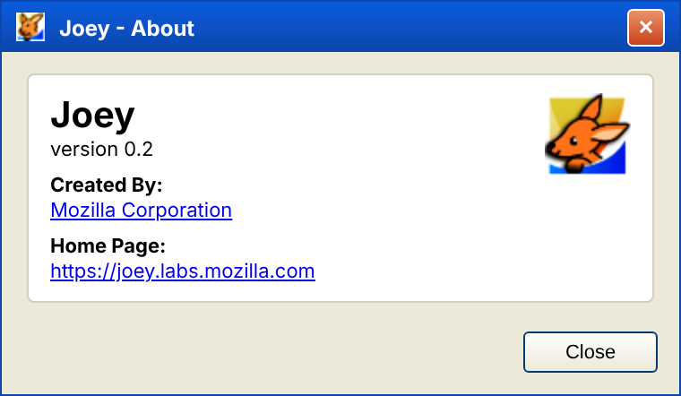

Component 1 of 3 · addons/ff/
The Firefox add-on
The desktop half of Joey was a Firefox 2-era XPI. It put a kangaroo in the status bar and two items in the right-click menu, watched the pages you visited, and pushed whatever you chose up to joey.labs.mozilla.com so a phone could pick it up later.
What it is
The add-on is a classic overlay extension. It layers joeyOverlay.xul onto Firefox's main window (and, in chrome.manifest, onto the old Mozilla Suite navigator.xul too), ships one JavaScript XPCOM component that does the HTTP work, and carries two locales. There is no build system beyond two shell scripts.
- Name / version
- Joey 0.3.0.0 (the
JOEY_VERSIONconstant andinstall.rdfagree; other files do not, see below) - Extension id
joey@mozilla.corporation- Target
- Firefox
{ec8030f7-…}, minVersion 0.8, maxVersion 3.0 ininstall.rdf; 1.5 to 3.0a6 inupdate.rdf - Creator
- Doug Turner; Marcio Galli is credited as contributor in the overlay and status code and wrote the pt-BR locale
- License
- MPL 1.1 / GPL 2.0 / LGPL 2.1 tri-license headers on every source file
- Locales
en-USandpt-BR(joey.dtd,brand.dtd,joey.properties)- Home / updates
https://joey.labs.mozilla.com/; auto-update manifest at/app/webroot/ff/update.rdf- Size
- About 2,660 lines of JavaScript across seven files, plus XUL, IDL and CSS
| File | Role |
|---|---|
chrome/content/joey/joeyOverlay.xul | Context-menu items, status-bar panel, menus, tooltips, Uploads Manager popup |
joeyOverlay.js (771 lines) | All capture logic: selection, image, media sniffer, feed watcher, tab upload, first run, page-talk, microsummary builder |
joeyStatus.js (561) | Per-upload status objects, aggregate progress label, Uploads Manager rendering, the joey_listener bridge from the component back to the UI |
joeyMediaFetcher.js (166) | Downloads a remote media URL to a temp file, then hands it to the uploader |
joeyDivHighlighter.js (279) | The green dotted box that follows the mouse in "Summary Capture" mode |
joeyXPath.js (208) | Builds an XPath for the element the user clicked |
joeyCommon.js (88) | Server URL helper, Clear Private Data, Restore Defaults, feed-reader registration |
joeyOptions.xul / about.xul | Preferences window and About dialog (joeyOptions.js exists but is empty) |
components/mocoJoey.idl / .xpt / .js (588) | The @mozilla.com/joey;1 component: login and multipart upload over nsIHttpChannel |
defaults/preferences/joey.js | Default prefs |
chrome/skin/classic/joey/ | Kangaroo icons (16, 32, 48 px), type icons, progress-meter background, selector tile, joey.css |
addons/ff/install.rdf, addons/ff/chrome.manifest, addons/ff/chrome/content/joey/
Entry points in the UI
Everything the user could do started from one of four places: the page context menu, the status-bar kangaroo and its menu, the Uploads Manager popup next to it, and the Options window. The rest of the add-on worked silently in the background.

<img>. Reconstruction from the XUL and CSS source, not a capture.




The status bar panel
The overlay adds a statusbarpanel with two buttons. joeyStatusButton carries the 16 px kangaroo and opens the menu. joeyStatusBox starts collapsed and is shown by joeyStatus.js only while something is queued, downloading or uploading; its label is the aggregate percentage and clicking it opens the joeyUDManager popup.
<menupopup id="joeyStatusPopup" >
<menuitem label="&overlay.menuSite.label;" oncommand="joey_launchCloudSite()" />
<menuitem id="joeyMediaMenuItem" label="&overlay.menuMedia.label;"
disabled="true" oncommand="joey_uploadFoundMedia()" />
<menuitem id="joey_selectContextual" label="&overlay.menuSummary.label;"
oncommand="joey_enableSelection();"/>
<menuitem id="joey_configurePreferences" label="&overlay.menuPreferences.label;"
oncommand="joeyLaunchPreferences();"/>
</menupopup>"My Joey!" simply loads <server>/uploads in the current tab. brand.dtd also defines a "Joey! Current Feed" label (overlay.menuRSS.label), but no menu item uses it in 0.3; feeds only go up through the automatic watcher or the registered feed handler described below.
addons/ff/chrome/content/joey/joeyOverlay.xul, addons/ff/chrome/locale/en-US/brand.dtd
Context menu visibility
There is no popupshowing handler. Instead a window-level mousedown listener checks for button 3, records the image under the pointer, and toggles the two menu items' hidden attribute based on whether there is an image and whether the content document has a non-empty selection.
function joeyOnMouseDown(e)
{
if (e.which == 3)
{
var target = e.target;
var classname = e.target.toString();
if (classname.match(/ImageElement/))
{
var hie = target.QueryInterface(Components.interfaces.nsIDOMHTMLImageElement);
if (hie != null)
setImageSource(hie);addons/ff/chrome/content/joey/joeyOverlay.js (joeyOnMouseDown, setImageSource)
Every capture path, in detail
All paths converge on one small object, joey_upload, which holds a title, a referrer URL, a content type and either a string (data) or an nsIFile (file). Its upload() method optionally prompts for a title, creates a fresh mocoJoey instance, attaches a joey_listener, and calls uploadFile or uploadData. Which of the two is used decides how the server stores the item: a file becomes a File row the daemon transcodes; a string becomes a Contentsource row the daemon refreshes.
| Trigger | Function | Payload | Content type sent | Title / referrer |
|---|---|---|---|---|
| Context menu on a selection | joey_selectedText | Selection text written to a temp file (tabs replaced with CRLF) | text/plain (file) | Page title / page URL |
| Context menu on an image | joey_selectedImage → JoeyMediaFetcher | Image bytes downloaded to a temp file | Whatever the HTTP channel reported (file) | Page title / page URL |
| Status menu "Media on page" | joey_uploadFoundMedia → JoeyMediaFetcher | Last sniffed audio/video URL downloaded to a temp file | Sniffed Content-Type (file) | Page title / page URL |
| Status menu "Summary Capture", then a click on the page | joey_selectedTarget | Microsummary generator XML containing an XPath | microsummary/xml (data) | "Microsummary from : URL" / page URL |
| Automatic, after N visits to a page with a feed | joeyFeedwatcher → joey_feed | rss=<feed>\r\nicon=<favicon>\r\n | rss-source/text (data) | Feed title or URL / feed URL |
| Automatic timer (opt-in) | joey_currentTabs | HTML <ul> of every window's tabs | browser/stuff (file) | "Current Tabs" / about:CurrentTabs |
| Firefox feed preview, "Subscribe using Joey!" | registered content handler | None; the browser opens /uploads/add/rss/?source=%s on the server | n/a | Set server-side |
addons/ff/chrome/content/joey/joeyOverlay.js, joeyMediaFetcher.js, joeyCommon.js
Selected text
The selection is read from the focused window, tabs are turned into line breaks, and the string is written to joey-selected-text.tmp in the OS temp directory with createUnique. The temp file is then uploaded as text/plain. If the "page talk" guided tour is active (see below), the status object gets an extra callback so the welcome page can show "Congratulations!" when the upload completes.
Images and sniffed media: the media fetcher
Joey never uploaded a URL for the server to fetch. For images and for audio/video, JoeyMediaFetcher opens its own nsIChannel to the resource, streams the bytes into joeymedia.tmp with an nsIBinaryOutputStream, reports download progress to the status UI, and on onStopRequest sets the file and the channel's contentType on the pending joey_upload and calls upload(). So a 20 MB video on YouTube's CDN came down to the user's disk and then went back up to Mozilla's server, twice crossing the user's link. The reason is practical: the add-on was running inside the user's session, with the user's cookies, so it could reach media the server could not.
The HTTP response sniffer
At overlay load an observer is registered for http-on-examine-response, which fires for every HTTP response Firefox receives. If the Content-Type contains video, audio or octet, and either the type or the URL matches one of the known extensions, the "Media on page" menu item is enabled, given a video or music icon, and its tooltip becomes "Upload: <page title>". The URL and type are stashed in two globals.
var g_joey_media_content_types = ['flv','mov','wmv','avi','mpeg','mp3','wav'];This is how Joey caught Flash-era video: the page's player requested an .flv, the sniffer saw it go by, and the user could then push that exact file to their phone. The globals are not per-tab (the code carries a todo: this needs to be per page comment), so the menu item reflects the last media response seen in any tab.
addons/ff/chrome/content/joey/joeyOverlay.js (httpscanner, joey_uploadFoundMedia)
Summary Capture: pick an element, get a microsummary
"Joey! Summary Capture" turns on g_joeySelectorService. It injects four absolutely-positioned XHTML divs tiled with selector-tile.png into the content document and, on a 150 ms timer, snaps them around the element under the mouse using getBoxObjectFor, rounding the box to a multiple of the 4 px tile so the dotted border lines up. A left click calls back with the element and tears everything down; any key cancels.
The callback, joey_selectedTarget, runs joey_buildXPath over the element (preferring id('…') when any ancestor has an id, skipping a, img, ul and font wrappers, indexing siblings by position) and wraps the result in a Firefox 2 microsummary generator document:
<generator xmlns="http://www.mozilla.org/microsummaries/0.1" name="Microsummary for URL" uri="urn:UUID">
<pages><include>URL</include></pages>
<template>
<transform xmlns="http://www.w3.org/1999/XSL/Transform" version="1.0">
<output method="text"/>
<template match="/"><value-of select="XPATH"/></template>
</transform>
</template>
<hint></hint></generator>It is uploaded as a content source of type microsummary/xml. The server's daemon then re-fetches the page periodically and applies the XSLT, so the phone sees a live, tiny piece of a web page (a stock price, a score, a headline) rather than a snapshot. The hint element was meant to carry the element's current innerHTML but the code blanks it (hint ="";) right after computing it.
addons/ff/chrome/content/joey/joeyDivHighlighter.js, joeyXPath.js, joeyOverlay.js (joey_selectedTarget)
The feed watcher
On every DOMContentLoaded, if joey.watchRSS is true, the overlay looks at the current browser's autodiscovered feeds[0], builds a pref key from the feed URL (slashes replaced by s), and bumps a per-feed visit counter joey.rss.<key>.seen. When the counter passes joey.rss-watch-limit (default 10) it calls joey_feed(), which uploads a two-line text content source:
var data = "rss=" + feedLocation + "\r\n";
if (icon != null)
data = data + "icon=" + icon + "\r\n";
...
upload.setContentType("rss-source/text");The counter resets to zero and the cycle continues, which means a frequently visited site is re-uploaded every ten visits; the server treats the repeat as a duplicate (status 519) and the client treats 519 as success. The visit counters live in the pref tree and are wiped on profile-change-teardown by the component and by "Clear Private Data".
addons/ff/chrome/content/joey/joeyOverlay.js (joeyFeedwatcher, joey_feed)
"Current Tabs" upload
g_run_tab_upload is started once at load and reschedules itself with setTimeout every joey.tab.upload.timeout ms (300,000, five minutes). When joey.tab.upload.enabled is true it walks every browser window through nsIWindowMediator, emits a nested HTML list of "Browser Window #n" and its tab titles linked to their URLs, writes it to a temp file and uploads it as browser/stuff with the fixed referrer about:CurrentTabs. The server special-cases that type: a new upload with the same referrer overwrites the previous original file rather than creating a second item, so the phone always has exactly one "Current Tabs" entry. This was the seed of the session-to-phone idea that later became Weave's tab sync.
addons/ff/chrome/content/joey/joeyOverlay.js (joey_currentTabs, g_run_tab_upload); server/app/controllers/uploads_controller.php (_saveUploadedFile)
First run, upgrades and the "page talk" protocol
At startup joeyStartup compares the joey.lastversion pref with JOEY_VERSION. The default value is the string "firstrun", so a fresh install opens <server>/version/index/0.3.0.0/firstrun in a new tab half a second later; an upgrade opens the same URL without /firstrun. The server renders the release notes for that version inside the welcome layout.
For the first-run case only, the overlay also attaches a one-shot DOMContentLoaded handler that runs joeyPageTalk(). That function appends a <div class="joeyCallback#joeyIsHere"> to the welcome page's body and listens for DOMNodeInserted events coming back. The page's own script (joeyclient.js on the server) watches for the marker, reveals the "Guided Tour" button, and polls the selection every three seconds until the user has highlighted the sample sentence; it then inserts <div class="joeyAction#joeySelected?id=123">. The overlay parses the id out of that class name into gJoeyPageCallback, and when the next selected-text upload completes it inserts joeyCallback#node=123, which the page turns into "Congratulations!". The two sides never share a script or a message channel; they talk only by inserting class-named divs into the same document. The release notes call the fallback "safe mode": without the marker the tour button stays hidden.
addons/ff/chrome/content/joey/joeyOverlay.js (joeyStartup, joeyPageTalk, joeyTalkBack, joeyPageTalkCallback); server/app/webroot/js/joeyclient.js
The mocoJoey XPCOM component
All network traffic goes through one scriptable component, registered under the contract id @mozilla.com/joey;1 and class id {66b3290c-6c74-4f15-8132-d6cc74e5d37f}. The interface is small:
[scriptable, uuid(D7C72F59-62D1-470D-9754-26B26F95EF8B)]
interface mocoJoeyListener : nsISupports
{
void onStatusChange(in string action, in long status);
void onProgressChange(in PRUint32 current, in PRUint32 total);
};
[scriptable, uuid(46746F62-39D1-4A35-9F60-AF7297AC0251)]
interface mocoJoey : nsISupports
{
void setListener(in mocoJoeyListener listener);
void uploadData(in string title, in string uri, in string data, in string type);
void uploadFile(in string title, in string uri, in nsIFile file, in string type);
};The .xpt typelib was generated from the IDL with the Gecko SDK's xpidl (see Build and ship). The implementation is plain JavaScript using the pre-Firefox-3 module pattern (registerSelf, getClassObject, an nsIFactory).
Upload flow
- Serialise.
uploadDataInternalrefuses (returns -1) ifjoey_in_progressis already true, then stores title, URL, type and payload in instance fields. Becausejoey_upload.upload()callscreateInstanceeach time, every capture gets its own component instance and this guard is per-upload, not global. - Find credentials.
setLoginInfoenumeratesnsIPasswordManagerfor an entry whosehostequals the server URL. If none exists it showspromptUsernameAndPasswordwith a "Save" checkbox and stores the result. - Log in.
loginToServicePOSTsrest=1&data[User][username]=…&data[User][password]=…asapplication/x-www-form-urlencodedto/users/login. The server answers with anX-joey-statusheader and a session cookie, which Firefox's cookie jar keeps for the next request. - Upload. On status 200 the callback calls
uploadDataFromGlobals, which assembles amultipart/form-databody by hand with annsIMultiplexInputStreamand POSTs it to/uploads/add. - Report.
uploadCallbackmaps theX-joey-statusheader toonStatusChange("upload", …)on the listener: 1 for success, -2 for out of space, -1 for anything else.
The multipart body
The boundary is the fixed string 111222111. Fields are named the way CakePHP 1.1 expects so the server can read them straight out of $this->data:
var start = createParam("rest", "1") +
createParam("data[Upload][title]", this.joey_title) +
createParam("data[Upload][referrer]", this.joey_url);
var endstring;
if (fileBuffer == null)
{
start += createParam("data[Contentsourcetype][name]", this.joey_content_type) +
createParam("data[Contentsource][source]", this.joey_data);
endstring = "--"+BOUNDARY+"--\r\n";
}For files the extra part is named data[File][Upload], with the filename literally set to the same string, a Content-Type of the capture's type and a Content-Length of nsIFile.fileSize. The channel's content type is set to "multipart/form-data, boundary=111222111" (comma, not the semicolon the RFC specifies; PHP of the day accepted it). Progress callbacks from nsIProgressEventSink.onProgress are forwarded as onProgressChange.
addons/ff/components/mocoJoey.js (uploadDataFromGlobals, loginToService, JoeyStreamListener)
Status codes
The server never used HTTP status codes for application state; every REST response is HTTP 200 with an X-joey-status header. The add-on reads it in JoeyStreamListener.onStopRequest. The code table lives on the server:
| Code | Meaning (server constant) | Add-on behaviour |
|---|---|---|
| 200 | SUCCESS | Login: proceed to upload. Upload: report success. |
| 511 | ERROR_NO_SESSION | Intended to clear joey_hasLogged and retry; the retry code is broken (see below). |
| 512 | ERROR_LOGIN | Login: onStatusChange("login", -1); the UI asks "Login Failed. Would you like to try again?", clears saved credentials and re-prompts. |
| 513 | ERROR_ACTIVATION (account not activated) | Treated as a generic login failure. |
| 514 | ERROR_DELETE | Never sent for add or login. |
| 515 | ERROR_NOAUTH | Generic upload failure. |
| 516 | ERROR_FILE | Generic upload failure. |
| 517 | ERROR_NO_SPACE (over the 20 MB quota) | onStatusChange("upload", -2); the listener shows the generic "Upload Failed" alert. |
| 518 | ERROR_UPLOAD | Generic upload failure. |
| 519 | ERROR_DUPLICATE | Treated as success ("if all okay, or if there is a dup"). |
server/app/app_controller.php; addons/ff/components/mocoJoey.js (uploadCallback, loginCallback)
Housekeeping
The component also registers itself as an observer for profile-change-teardown and deletes the whole joey.rss pref branch when the profile shuts down, so the feed-visit counters do not persist across sessions. That is the only state it keeps outside the password manager.
Status and progress UI
joeyStatus.js is a small event-queue renderer written around XUL. A singleton joeyStatusUpdateService hands out JoeyStatusUpdateClass instances, one per capture. The capture code calls tellStatus(verb, from, to, adverb, contentType) with verbs queued, download, upload, login and adverbs completed, failed, failed,tryagain. Each call pushes onto a per-item actionQueue, then the service drains the queue oldest-first and updates XUL.
- Per-item meter. The first
queued/download/uploadfor an item appends a<stack>to thejoeyUDManagerpopup containing a 100 px wide box styled withmeterbg.jpgand a label. Progress is drawn by shifting the background position; the label reads "NN% of Title". A download counts for the first half of the bar and the upload for the second, so a sniffed video shows 0 to 50% while coming down and 50 to 100% while going up. - Type icon. The label gets
joeyTypeVideo,joeyTypeAudioorjoeyTypeTextdepending on the content type, which maps to the 14 px icons in the skin. - Aggregate label.
generalUDUpdateaverages every live item and sets the status-bar box to "Joey: NN%" or "Joey: waiting..", uncollapsing it while there is at least one item and collapsing it again when the last one is deleted. - Global messages. Completion and failure push string commands such as
uploadCompleted-3,clear-3,delete-3onto a second queue thatrenderer()consumes one entry every 1,111 ms, which is what gives the "Upload completed" text time to be read before the meter disappears. Failures paint the meter red. - Login retry. When the component reports a login failure the
joey_listenerbridge shows a confirm dialog; on OK it callstellStatus("login", null, null, "failed,tryagain"), which schedulesloginFailedRetry-N; the renderer then callsclearLoginData()andupload()on the originaljoey_uploadobject, so the user gets a fresh credentials prompt.
addons/ff/chrome/content/joey/joeyStatus.js, addons/ff/chrome/skin/classic/joey/joey.css
Preferences
Only five prefs have defaults. Several more are read with getBoolPref/getIntPref and simply do not exist until the Options window or the code writes them.
| Pref | Default | Used for |
|---|---|---|
joey.service_url | https://joey.labs.mozilla.com | Base URL for every request. Editable under "Advanced Options"; "Restore Defaults" writes the constant back. |
joey.enable_logging | true | Gate for joeyDumpToConsole, which logs exceptions to the Error Console as "joey: …". |
joey.lastversion | "firstrun" | Drives the first-run/upgrade tab; set to JOEY_VERSION after it opens. |
joey.askForTitle | true | Show the "Edit page title" prompt before each upload. The prompt's checkbox writes it back. |
joey.remember_username | false | Declared but not referenced anywhere else in the add-on. |
joey.watchRSS | none | Enables the feed watcher. Bound to the "Upload RSS of frequently visited sites" checkbox. |
joey.rss-watch-limit | none (code falls back to 10) | Visits before a feed is uploaded. |
joey.rss.<feed>.seen | created on demand | Per-feed visit counters; deleted on shutdown and by Clear Private Data. |
joey.tab.upload.enabled | none (code falls back to false) | Enables the periodic "Current Tabs" upload. Bound to "Upload current tabs frequently". |
joey.tab.upload.timeout | none (code falls back to 300000) | Tab upload interval in ms. Not exposed in the UI. |
Clear Private Data calls clearJoeyFeedWatcherData() (delete the joey.rss branch) and clearLoginData(), which removes every password-manager entry whose host equals the current server URL. The pt-BR label is more honest about what it does: "Apagar dados de login", clear login data.
Register Joey! Feed Reader calls navigator.registerContentHandler for the Firefox 2 feed MIME type, pointing at the server:
navigator.registerContentHandler('application/vnd.mozilla.maybe.feed',
url + '/uploads/add/rss/?source=%s',
'Joey!');After that, "Joey!" appears alongside Bloglines and Google Reader in Firefox's feed preview page, and choosing it sends the user to the server's add form pre-filled with rss=<feed URL>. The server's add('rss') action handles the source query parameter for exactly this case.
addons/ff/defaults/preferences/joey.js, addons/ff/chrome/content/joey/joeyOptions.xul, joeyCommon.js; server/app/controllers/uploads_controller.php
Build and ship
There is no makefile. buildit.sh regenerates the typelib, copies the tree into work/, strips .svn and .DS_Store, zips chrome/ into joey.jar and the lot into joey.xpi. The paths are the author's laptop:
pushd components
rm *.xpt
/Users/dougt/builds/gecko-sdk/bin/xpidl -m typelib -I"/Users/dougt/builds/gecko-sdk/idl" mocoJoey.idl
popd
...
pushd chrome
rm joey.jar
zip -r joey.jar *
popd
zip -r joey.xpi *pushit.sh then scps joey.xpi and update.rdf to /data/joey.labs.mozilla.com/ on the production host. The server's "Get the software" page links to /app/webroot/ff/joey.xpi, and install.rdf's em:updateURL points at the uploaded update.rdf, whose single entry offers 0.3.0.0 from the same path. So shipping a release was: edit the version constant, run two scripts.
install.js is a leftover from the pre-Firefox-1.0 XPInstall era (it registers chrome with Install.registerChrome and still says version 0.1). Firefox 1.5 and later ignore it in favour of install.rdf and chrome.manifest; the SeaMonkey/Mozilla Suite overlay line in the manifest is the other trace of that heritage.
addons/ff/buildit.sh, pushit.sh, update.rdf, install.js, install.rdf
Reading the code today
This is prototype code from a two-person Labs project, and it reads that way: direct, fast, and occasionally wrong in ways that did not matter for a demo. A few things stand out.
Design choices worth noticing
- A sniffer on every response. Observing
http-on-examine-responseglobally is heavy-handed by today's standards, but it was the only way in 2007 to find the media file behind a Flash player, and it is the feature that made the demo video work. - Everything becomes a temp file. Selections, tab lists and downloaded media all go through
TmpDbefore upload. The uploader needed annsIFileto stream large bodies without holding them in memory; small strings got the same treatment for uniformity. Temp files are never deleted. - Download then re-upload. The media fetcher doubles the traffic for every image and video but keeps the server out of the user's cookies and avoids hot-linking problems.
- Transport by header, state by DOM. Application status rides in a custom
X-joey-statusheader rather than HTTP codes, and the page-to-add-on handshake rides in CSS class names on inserteddivs. Both are inventive and both are brittle. - Hand-rolled XPCOM. Manual
QueryInterface, fake stream listeners that implement five interfaces,registerSelfthrowingNS_ERROR_FACTORY_REGISTER_AGAIN: this is exactly what extension code looked like beforeXPCOMUtils.jsmarrived in Firefox 3.
Bugs you can point to
- The saved password is the username. In
mocoJoey.jsline 227, when the user ticks "Save" in the login prompt:
The third argument should bepasswordManager.addUser(getJoeyURL(), u.value, u.value);p.value. On the next uploadsetLoginInforeads that entry back and sends the username as the password, the server returns 512, the UI offers a retry, andclearLoginData()wipes the bad entry. Users who ticked "Save" would have been re-prompted on every second upload. - The expired-session retry cannot run.
JoeyStreamListener.onStopRequestinvokes the callback asthis.mCallbackFunc(this.mOwner, …), so insideuploadCallbackthe value ofthisis the stream listener, not the component. The 511 branch does
which throws because the listener has nothis.joey_hasLogged = false; this.uploadDataInternal( this.joey_title, this.joey_url, this.joey_file, this.joey_content_type);uploadDataInternal, and even on the componentjoey_fileis never assigned (the payload lives injoey_data). The samethisconfusion meansjoey_hasLoggedis set on the listener and the component logs in before every single upload. The code's own TODO above this branch admits the session case was unfinished. - Dead branch in
joey_selected.joeyOverlay.jsline 349:
The condition is always true, soif (selection != null || selection != "") return joey_selectedText(); joey_selectedArea();joey_selectedArea()is unreachable; it is also not defined anywhere in the add-on. Nothing callsjoey_selectedin 0.3, so no user hit this. - Off-by-one in the sniffer.
for(var i=types.length;i>=0;i--)readstypes[7], which isundefined, andcontentType.indexOf(undefined)searches for the string "undefined". Harmless, but it shows how little this path was exercised beyond the happy case. - Feed watcher throws until Options is opened.
joeyFeedwatcherreadsjoey.watchRSSwithgetBoolPrefoutside anytry, and the pref has no default. On a fresh profile every page load throwsNS_ERROR_UNEXPECTEDout of theDOMContentLoadedhandler; the feature silently starts working once the user has visited the Options window, which creates the pref through the<preference>binding. - Version drift.
JOEY_VERSIONandinstall.rdfsay 0.3.0.0;about.xul's DTD says "version 0.2";install.jsandcontents.rdfsay 0.1;install.rdfallows Firefox up to 3.0 whileupdate.rdfstops at 3.0a6.
What survived. Strip away the XPCOM and the shape is familiar: a browser button that sends the current selection, image or media to a cloud inbox; an opt-in tab list that follows you to your phone; a feed that lands on your handset. Joey's add-on is a 2007 sketch of what Pocket, Firefox Send-to-Device and Firefox Sync's tab sync each later did properly.